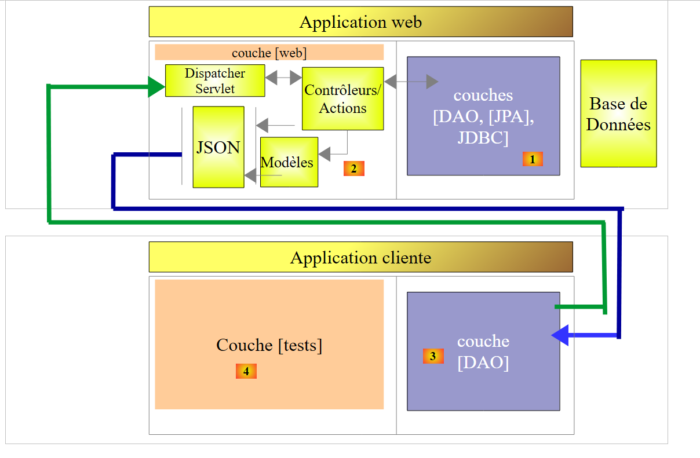
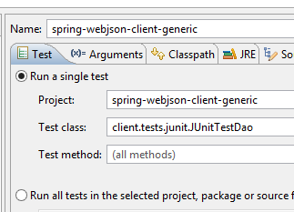
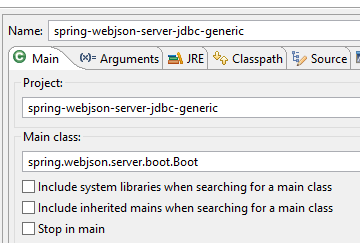
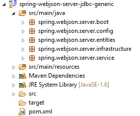
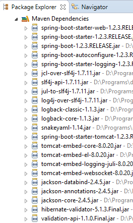
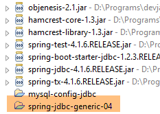
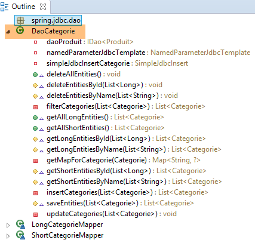
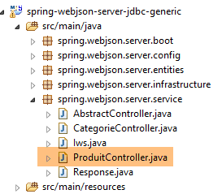
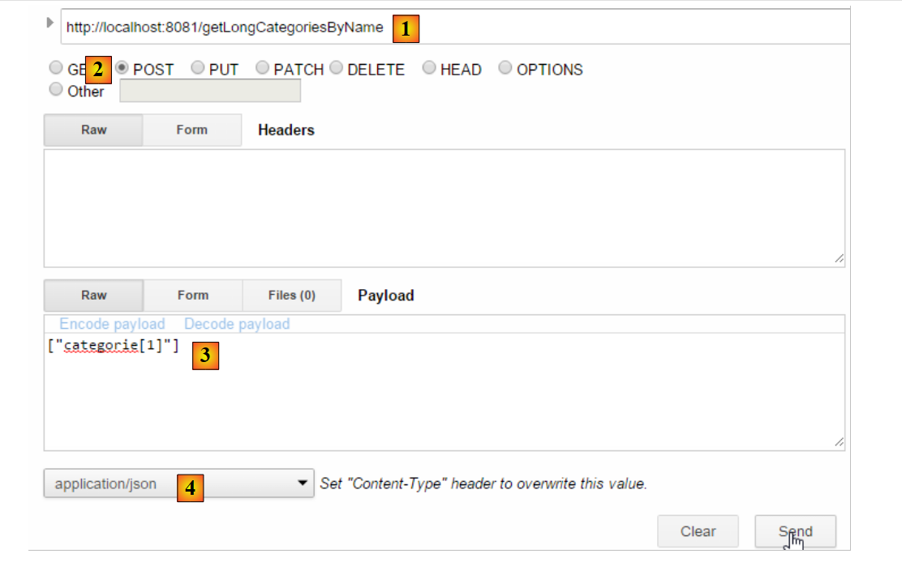

17. Publicar una base de datos en la web
17.1. Arquitectura del servicio web / jSON
Vamos a implementar la siguiente arquitectura:
 |
- en [1], las capas [DAO, [JPA], JDBC] se implementan mediante una de las 24 configuraciones presentadas en los capítulos anteriores y, en particular, en el apartado 15;
- la capa [DAO] [3] del cliente remoto implementa la misma interfaz que la capa [DAO] [1], lo que nos permite utilizar la misma capa de pruebas que en los capítulos anteriores. Todo ocurre como si las capas [2-3] fueran transparentes para la capa [4];
Nos basaremos en los siguientes proyectos:
- el proyecto [sgbd-config-jdbc], que configura la capa JDBC de uno de los seis SGBD;
- el proyecto [sgbd-config-jpa-*], que configura la capa JPA del SGBD elegido para una de las tres implementaciones JPA estudiadas (Hibernate, EclipseLink, OpenJpa);
- el proyecto genérico [spring-jdbc-04] que implementa la capa [DAO] [1];
- el proyecto genérico [spring-jpa-generic], que implementa la capa [DAO] [2];
- el proyecto genérico [spring-webjson-server-jdbc-generic], que implementa un servicio web basado en el proyecto [spring-jdbc-04];
- el proyecto genérico [spring-webjson-server-jpa-generic], que implementa un servicio web basado en el proyecto [spring-jpa-generic];
- el cliente genérico [spring-webjson-client-generic], que será el único cliente de las 24 configuraciones del servicio web;
17.2. Configuración del entorno de trabajo
Vamos a trabajar con los siguientes elementos:
- SGBD MySQL 5.6.25;
- Implementación de JPA Hibernate;
Importe los siguientes proyectos a STS:
 |
- los proyectos [spring-webjson-*] se encontrarán en la carpeta [<exemples>\spring-database-generic\spring-webjson];
- ejecute [Alt-F5] y, a continuación, vuelva a generar todos los proyectos anteriores;
Para comprobar que el entorno de trabajo se ha instalado correctamente, proceda de la siguiente manera:
- inicie el servicio web con la configuración de ejecución [spring-webjson-server-jpa-generic-hibernate], que se basa en una implementación JPA / Hibernate;
 |  |
y, a continuación:
- ejecute el cliente de este servicio web con la configuración de ejecución [spring-webjson-client-generic], que es una prueba de JUnit:
 |  |
La prueba debe completarse con éxito:
 |
- En [1], detenga el servicio web y, a continuación, inicie el servicio web con la configuración de ejecución [spring-webjson-server-jdbc-generic], que se basa en una implementación JDBC:
 |  |
y, a continuación, inicie el cliente de este servicio web con la configuración de ejecución [spring-webjson-client-generic]:
|
La prueba debe completarse con éxito:
 |
17.3. Implementación del servicio web / jSON / JDBC
En primer lugar, nos centramos en la siguiente arquitectura:
 |
donde la capa [DAO] [1] se comunica directamente con la capa JDBC del SGBD.
17.3.1. El proyecto Eclipse del servicio web
El proyecto Eclipse del servicio web / jSON / JDBC es el siguiente:
 |
Se trata de un proyecto Maven cuyo archivo [pom.xml] es el siguiente:
<project xmlns="http://maven.apache.org/POM/4.0.0" xmlns:xsi="http://www.w3.org/2001/XMLSchema-instance"
xsi:schemaLocation="http://maven.apache.org/POM/4.0.0 http://maven.apache.org/xsd/maven-4.0.0.xsd">
<modelVersion>4.0.0</modelVersion>
<groupId>dvp.spring.database</groupId>
<artifactId>spring-webjson-server-jdbc-generic</artifactId>
<version>0.0.1-SNAPSHOT</version>
<name>spring-webjson-server-jdbc-generic</name>
<description>démo spring mvc</description>
<parent>
<groupId>org.springframework.boot</groupId>
<artifactId>spring-boot-starter-parent</artifactId>
<version>1.2.3.RELEASE</version>
</parent>
<dependencies>
<!-- capa web -->
<dependency>
<groupId>org.springframework.boot</groupId>
<artifactId>spring-boot-starter-web</artifactId>
</dependency>
<!-- capa [DAO] -->
<dependency>
<groupId>dvp.spring.database</groupId>
<artifactId>spring-jdbc-generic-04</artifactId>
<version>0.0.1-SNAPSHOT</version>
</dependency>
</dependencies>
<!-- complementos -->
<build>
<plugins>
<plugin>
<groupId>org.apache.maven.plugins</groupId>
<artifactId>maven-surefire-plugin</artifactId>
<version>2.18.1</version>
</plugin>
</plugins>
</build>
</project>
- líneas 11-15: el proyecto Maven principal;
- líneas 24-28: la dependencia de la capa [DAO / JDBC] implementada por el proyecto [spring-jdbc-generic-04];
- líneas 19-22: la dependencia del artefacto [spring-boot-starter-web]. Este artefacto incluye todas las dependencias necesarias para la creación de un servicio web / jSON. También incluye bibliotecas innecesarias. Por lo tanto, sería necesaria una configuración más precisa, pero esta configuración es práctica para empezar.
Las dependencias que conlleva esta configuración son las siguientes:
 |  | 1  |
- en [1], se observa que Eclipse ha detectado la dependencia del archivo del proyecto [spring-jdbc-generic-04];
Las dependencias anteriores son tanto las de la capa [DAO] como las de la capa [web].
17.3.2. Configuración de la capa [web]
La capa [web] se configura mediante dos archivos de configuración de Spring:
 |
17.3.2.1. La clase [WebConfig]
La función principal de la clase [WebConfig] es configurar:
- el servidor Tomcat en el que se va a implementar el servicio web;
- los filtros jSON de serialización/deserialización de los objetos [Produit] y [Categorie]:
package spring.webjson.server.config;
import java.util.List;
import org.springframework.beans.factory.annotation.Autowired;
import org.springframework.beans.factory.config.ConfigurableBeanFactory;
import org.springframework.boot.context.embedded.EmbeddedServletContainerFactory;
import org.springframework.boot.context.embedded.ServletRegistrationBean;
import org.springframework.boot.context.embedded.tomcat.TomcatEmbeddedServletContainerFactory;
import org.springframework.context.ApplicationContext;
import org.springframework.context.annotation.Bean;
import org.springframework.context.annotation.Configuration;
import org.springframework.context.annotation.Scope;
import org.springframework.http.converter.HttpMessageConverter;
import org.springframework.http.converter.json.MappingJackson2HttpMessageConverter;
import org.springframework.web.context.WebApplicationContext;
import org.springframework.web.servlet.DispatcherServlet;
import org.springframework.web.servlet.config.annotation.EnableWebMvc;
import org.springframework.web.servlet.config.annotation.WebMvcConfigurerAdapter;
import com.fasterxml.jackson.databind.ObjectMapper;
import com.fasterxml.jackson.databind.ser.impl.SimpleBeanPropertyFilter;
import com.fasterxml.jackson.databind.ser.impl.SimpleFilterProvider;
@Configuration
@EnableWebMvc
public class WebConfig extends WebMvcConfigurerAdapter {
// -------------------------------- configuración de la capa [web]
@Autowired
private ApplicationContext context;
@Bean
public DispatcherServlet dispatcherServlet() {
DispatcherServlet servlet=new DispatcherServlet((WebApplicationContext) context);
return servlet;
}
@Bean
public ServletRegistrationBean servletRegistrationBean(DispatcherServlet dispatcherServlet) {
return new ServletRegistrationBean(dispatcherServlet, "/*");
}
@Bean
public EmbeddedServletContainerFactory embeddedServletContainerFactory() {
return new TomcatEmbeddedServletContainerFactory("", 8081);
}
// -------------------------------- configuración de filtros [json]
...
}
- línea 25: la clase es una clase de configuración de Spring;
- línea 26: la anotación [@EnableWebMvc] indica que la capa web está implementada con Spring MVC. Esto provocará configuraciones implícitas que no tendremos que realizar;
- líneas 30-31: inyección del contexto Spring de la aplicación;
- líneas 33-37: definición del bean [dispatcherServlet] que, en las aplicaciones Spring MVC, desempeña la función de [FrontController], cuya función es dirigir las solicitudes de clients hacia el controlador capaz de procesarlas;
- líneas 39-42: se registra el servlet del servicio web, así como los URL que procesa. Aquí se ha escrito [/*], que significa todos los URLs;
- líneas 44-47: definición del bean [embeddedServletContainerFactory] que define el servidor web que se va a utilizar. En este caso será el servidor web Tomcat [http://tomcat.apache.org/]. También se puede utilizar el servidor Jetty [http://www.eclipse.org/jetty/]. Ambos son servidores integrados en las dependencias de Maven. Cuando [Spring Boot] controla el inicio del proyecto, inicia automáticamente el servidor web designado en la configuración y despliega en él el servicio o la aplicación web;
La configuración de los filtros jSON se realiza de la siguiente manera:
package spring.webjson.server.config;
import java.util.List;
...
@Configuration
@EnableWebMvc
public class WebConfig extends WebMvcConfigurerAdapter {
// -------------------------------- configuración de capa [web]
...
// -------------------------------- configuración de filtros [json]
// asignación jSON
@Bean
public MappingJackson2HttpMessageConverter mappingJackson2HttpMessageConverter() {
final MappingJackson2HttpMessageConverter converter = new MappingJackson2HttpMessageConverter();
final ObjectMapper objectMapper = new ObjectMapper();
converter.setObjectMapper(objectMapper);
return converter;
}
@Override
public void configureMessageConverters(List<HttpMessageConverter<?>> converters) {
converters.add(mappingJackson2HttpMessageConverter());
super.configureMessageConverters(converters);
}
// filtros jSON
@Bean
public ObjectMapper jsonMapper(MappingJackson2HttpMessageConverter mappingJackson2HttpMessageConverter) {
return mappingJackson2HttpMessageConverter.getObjectMapper();
}
@Bean
@Scope(value = ConfigurableBeanFactory.SCOPE_PROTOTYPE)
ObjectMapper jsonMapperShortCategorie(MappingJackson2HttpMessageConverter mappingJackson2HttpMessageConverter) {
ObjectMapper jsonMapper = jsonMapper(mappingJackson2HttpMessageConverter);
jsonMapper.setFilters(new SimpleFilterProvider().addFilter("jsonFilterCategorie",
SimpleBeanPropertyFilter.serializeAllExcept("produits")));
return jsonMapper;
}
@Bean
@Scope(value = ConfigurableBeanFactory.SCOPE_PROTOTYPE)
ObjectMapper jsonMapperLongCategorie(MappingJackson2HttpMessageConverter mappingJackson2HttpMessageConverter) {
ObjectMapper jsonMapper = jsonMapper(mappingJackson2HttpMessageConverter);
jsonMapper.setFilters(new SimpleFilterProvider().addFilter("jsonFilterCategorie",
SimpleBeanPropertyFilter.serializeAllExcept()).addFilter("jsonFilterProduit",
SimpleBeanPropertyFilter.serializeAllExcept("categorie")));
return jsonMapper;
}
@Bean
@Scope(value = ConfigurableBeanFactory.SCOPE_PROTOTYPE)
ObjectMapper jsonMapperShortProduit(MappingJackson2HttpMessageConverter mappingJackson2HttpMessageConverter) {
ObjectMapper jsonMapper = jsonMapper(mappingJackson2HttpMessageConverter);
jsonMapper.setFilters(new SimpleFilterProvider().addFilter("jsonFilterProduit",
SimpleBeanPropertyFilter.serializeAllExcept("categorie")));
return jsonMapper;
}
@Bean
@Scope(value = ConfigurableBeanFactory.SCOPE_PROTOTYPE)
ObjectMapper jsonMapperLongProduit(MappingJackson2HttpMessageConverter mappingJackson2HttpMessageConverter) {
ObjectMapper jsonMapper = jsonMapper(mappingJackson2HttpMessageConverter);
jsonMapper.setFilters(new SimpleFilterProvider().addFilter("jsonFilterProduit",
SimpleBeanPropertyFilter.serializeAllExcept()).addFilter("jsonFilterCategorie",
SimpleBeanPropertyFilter.serializeAllExcept("produits")));
return jsonMapper;
}
}
- línea 8: la clase [WebConfig] extiende la clase [WebMvcConfigurerAdapter]. Esta última clase configura la aplicación web con valores por defecto. Cuando se desea personalizar esta configuración, es necesario redefinir ciertos métodos de esta clase. En este caso, queremos redefinir el método [configureMessageConverters] de las líneas [22-26] (fíjese en la anotación @Override), que define una lista de «convertidores». El servicio web /jSON y su cliente intercambian líneas de texto. Un convertidor es una herramienta capaz de crear un objeto a partir de una línea de texto recibida (deserialización) y de crear una línea de texto a partir de un objeto (serialización). Aquí, las líneas de texto serán cadenas jSON. Por lo tanto, hablaremos de serialización/deserialización jSON;
- línea 23: el método [configureMessageConverters] recibe como parámetro una lista de convertidores;
- líneas 24-25: el convertidor jSON [MappingJackson2HttpMessageConverter] de las líneas [14-20] se añade a esta lista. Esto permitirá los intercambios jSON entre el cliente y el servidor;
- líneas [14-20]: definen un convertidor jSON implementado por la clase [MappingJackson2HttpMessageConverter]. Esta clase (línea 10) se encontrará en las dependencias Maven del proyecto;
- líneas [17-18]: se crea un mapeador jSON y se asigna al convertidor [MappingJackson2HttpMessageConverter];
- líneas [29-32]: definen el mapeador jSON creado en la línea 17 como un bean de Spring. Esto lo coloca en el contexto de Spring y lo hace disponible para ser inyectado en otros beans o para ser utilizado en el código de la aplicación web;
- líneas 34-41: definen un filtro jSON para el mapeador jSON anterior;
- línea 35: la anotación [@Scope(value = ConfigurableBeanFactory.SCOPE_PROTOTYPE)] hace que el bean definido aquí no sea un singleton. Cada vez que se solicite al contexto, se volverá a ejecutar el método [jsonMapperCategorieWithoutProduits]. Esto es necesario aquí porque definimos cuatro filtros jSON. Sin embargo, solo uno debe estar activo en un momento dado. Al dar al bean el ámbito [ConfigurableBeanFactory.SCOPE_PROTOTYPE], nos aseguramos de que el método se vuelva a ejecutar y de que el filtro anterior sea sustituido por el nuevo;
- para comprender estos filtros, hay que recordar que en la capa [DAO]:
- la entidad [Produit] ha sido decorada con la anotación [jsonFilterProduit];
- la entidad [Categorie] se ha decorado con la anotación [jsonFilterCategorie];
Por lo tanto, hay que definir filtros con estos nombres.
- líneas [34-41]: definen un filtro llamado [jsonMapperShortCategorie] que permite obtener la representación jSON de una categoría sin sus productos;
- líneas [43-51]: definen un filtro llamado [jsonMapperLongCategorie] que permite obtener la representación jSON de una categoría con sus productos;
- líneas [53-60]: definen un filtro denominado [jsonMapperShortProduit] que permite obtener la representación jSON de un producto sin su categoría;
- líneas [62-70]: definen un filtro denominado [jsonMapperLongProduit] que permite obtener la representación jSON de un producto con su categoría;
17.3.2.2. La clase [AppConfig]
La clase [AppConfig] configura el conjunto de la aplicación, es decir, las capas [web] y [DAO]:
package spring.webjson.server.config;
import org.springframework.context.annotation.ComponentScan;
import org.springframework.context.annotation.Configuration;
import org.springframework.context.annotation.Import;
@Configuration
@ComponentScan(basePackages = { "spring.webjson.server.service" })
@Import({ spring.jdbc.config.AppConfig.class, WebConfig.class })
public class AppConfig {
}
- línea 7: la clase es una clase de configuración de Spring;
- línea 9: se importan los beans de la capa [DAO / JDBC], así como los definidos por la clase [WebConfig]. Por lo tanto, todos los beans de la capa [DAO] estarán disponibles en la aplicación web / jSON;
- línea 8: indica en qué paquetes se encuentran otros beans de Spring;
17.3.3. La excepción [ServerException]
 |
Al igual que en los capítulos anteriores, la capa [DAO] lanzaba una excepción no controlada [DaoException], la capa [web] lanzará una excepción no controlada [ServerException]:
package spring.webjson.server.infrastructure;
import generic.jdbc.infrastructure.UncheckedException;
public class ServerException extends UncheckedException {
private static final long serialVersionUID = 1L;
// fabricantes
public ServerException() {
super();
}
public ServerException(int code, Throwable e, String simpleClassName) {
super(code, e, simpleClassName);
}
}
- línea 5: la clase [ServerException] extiende la clase [UncheckedException] definida en el proyecto que configura la capa JDBC (línea 3);
17.3.4. Los controladores
 |
 |
Aquí tendremos dos controladores:
- [CategorieController] controlará las consultas sobre las categorías;
- [CategorieController] controlará las solicitudes sobre los productos;
Los URL expuestos por los controladores se corresponden uno a uno con los métodos de las interfaces [DaoCategorie] y [DaoProduit] de la capa [DAO]:
 |  |
Así pues, en el ejemplo anterior:
- el método web [deleteAllCategories] llamará al método [deleteAllEntities] de la clase [DaoCategorie];
- el método web [getShortCategoriesById] llamará al método [getShortEntitiesById] de la clase [DaoCategorie];
Lo mismo ocurre con los productos:
 |  |
17.3.4.1. Los URL expuestos por el controlador [CategorieController]
| |
| |
| |
| |
| |
| |
| |
| |
| |
| |
17.3.4.2. Los URL expuestos por el controlador [ProduitController]
| |
| |
| |
| |
| |
| |
| |
| |
| |
| |
17.3.5. Implementación genérica del servicio web
 |
La lista de URL expuesta por el servicio web muestra que se ofrecen los mismos tipos de URL para gestionar las categorías y los productos. En lugar de escribir dos controladores muy similares, los derivaremos de una clase que se encargará de todo el trabajo común a ambos controladores. Será la clase [AbstractController] anterior. Esta clase implementará la siguiente interfaz [Iws]:
package spring.webjson.server.service;
import java.util.List;
import javax.servlet.http.HttpServletRequest;
import spring.jdbc.entities.AbstractCoreEntity;
public interface Iws<T extends AbstractCoreEntity> {
// lista de todas las entidades T
public Response<List<T>> getAllShortEntities();
public Response<List<T>> getAllLongEntities();
// de entidades específicas - version breve
public Response<List<T>> getShortEntitiesById(HttpServletRequest request);
public Response<List<T>> getShortEntitiesByName(HttpServletRequest request);
// de entidades específicas - version larga
public Response<List<T>> getLongEntitiesById(HttpServletRequest request);
public Response<List<T>> getLongEntitiesByName(HttpServletRequest request);
// actualización de varias entidades
public Response<List<T>> saveEntities(HttpServletRequest request);
// eliminación de todas las entidades
public Response<Void> deleteAllEntities();
// eliminación de varias entidades
public Response<Void> deleteEntitiesById(HttpServletRequest request);
public Response<Void> deleteEntitiesByName(HttpServletRequest request);
}
Esta interfaz recoge los métodos de la interfaz de la capa [DAO] que se va a utilizar:
package spring.jdbc.dao;
import java.util.List;
import spring.jdbc.entities.AbstractCoreEntity;
public interface IDao<T extends AbstractCoreEntity> {
// lista de todas las entidades T
public List<T> getAllShortEntities();
public List<T> getAllLongEntities();
// de entidades específicas - version breve
public List<T> getShortEntitiesById(Iterable<Long> ids);
public List<T> getShortEntitiesById(Long... ids);
public List<T> getShortEntitiesByName(Iterable<String> names);
public List<T> getShortEntitiesByName(String... names);
// de entidades específicas - version larga
public List<T> getLongEntitiesById(Iterable<Long> ids);
public List<T> getLongEntitiesById(Long... ids);
public List<T> getLongEntitiesByName(Iterable<String> names);
public List<T> getLongEntitiesByName(String... names);
// actualización de varias entidades
public List<T> saveEntities(Iterable<T> entities);
public List<T> saveEntities(@SuppressWarnings("unchecked") T... entities);
// eliminación de todas las entidades
public void deleteAllEntities();
// eliminación de varias entidades
public void deleteEntitiesById(Iterable<Long> ids);
public void deleteEntitiesById(Long... ids);
public void deleteEntitiesByName(Iterable<String> names);
public void deleteEntitiesByName(String... names);
public void deleteEntitiesByEntity(Iterable<T> entities);
public void deleteEntitiesByEntity(@SuppressWarnings("unchecked") T... entities);
}
El paso de la interfaz [IDao<T>] de la capa [DAO] a la interfaz [Iws<T>] del servicio web ha obedecido a las siguientes reglas:
- los métodos de la interfaz [Iws<T>] no lanzarán ninguna excepción. Si se produce una excepción, esta se encapsulará en el objeto [Response];
- Las variantes de los parámetros, como las líneas 45 y 47 de [Iterable<String> names, String... names], desaparecen. Los métodos obtienen sus parámetros de la consulta HTTP del cliente de tipo [HttpServletRequest request];
Todas las respuestas del servicio web se encapsularán en el siguiente objeto [Response]:
 |
package spring.webjson.server.service;
public class Response<T> {
// ----------------- propiedades
// estado de la operación
private int status;
// un mensaje de error
private String exception;
// el cuerpo de la respuesta
private T body;
// constructores
public Response() {
}
public Response(int status, String exception, T body) {
this.status = status;
this.exception = exception;
this.body = body;
}
// getters y setters
...
}
- línea 4: la respuesta encapsula un tipo T;
- línea 12: la respuesta de tipo T;
- líneas 7-10: es posible que un método encuentre una excepción. En ese caso, devolverá una respuesta con:
- línea 8: status!=0;
- línea 10: un mensaje de error;
La clase [AbstractController] es la siguiente:
package spring.webjson.server.service;
import java.util.List;
import javax.annotation.PostConstruct;
import javax.servlet.http.HttpServletRequest;
import org.springframework.beans.factory.annotation.Autowired;
import org.springframework.context.ApplicationContext;
import spring.jdbc.dao.IDao;
import spring.jdbc.entities.AbstractCoreEntity;
import spring.jdbc.infrastructure.DaoException;
import spring.webjson.server.infrastructure.ServerException;
import com.fasterxml.jackson.core.type.TypeReference;
import com.fasterxml.jackson.databind.ObjectMapper;
import com.google.common.io.CharStreams;
public abstract class AbstractController<T extends AbstractCoreEntity> implements Iws<T> {
@Autowired
protected ApplicationContext context;
// capa DAO
private IDao<T> dao;
abstract protected IDao<T> getDao();
// local
private String simpleClassName = getClass().getSimpleName();
@PostConstruct
public void init(){
dao=getDao();
}
@Override
public Response<List<T>> getAllShortEntities() {
try {
// respuesta
return new Response<List<T>>(0, null, dao.getAllShortEntities());
} catch (DaoException e) {
return new Response<List<T>>(1, e.toString(), null);
} catch (Exception e) {
return new Response<List<T>>(2, new ServerException(1007, e, simpleClassName).toString(), null);
}
}
@Override
public Response<List<T>> getAllLongEntities() {
try {
// respuesta
return new Response<List<T>>(0, null, dao.getAllLongEntities());
} catch (DaoException e) {
return new Response<List<T>>(1, e.toString(), null);
} catch (Exception e) {
return new Response<List<T>>(2, new ServerException(1008, e, simpleClassName).toString(), null);
}
}
@Override
public Response<List<T>> getShortEntitiesById(HttpServletRequest request) {
...
}
@Override
public Response<List<T>> getShortEntitiesByName(HttpServletRequest request) {
...
}
@Override
public Response<List<T>> getLongEntitiesById(HttpServletRequest request) {
...
}
@Override
public Response<List<T>> getLongEntitiesByName(HttpServletRequest request) {
...
}
@Override
public Response<List<T>> saveEntities(HttpServletRequest request) {
return new Response<List<T>>(2, new ServerException(1013, new RuntimeException("[saveEntities] not implemented"), simpleClassName).toString(), null);
}
@Override
public Response<Void> deleteAllEntities() {
try {
// se elimina
dao.deleteAllEntities();
// respuesta
return new Response<Void>(0, null, null);
} catch (DaoException e) {
return new Response<Void>(1, e.toString(), null);
} catch (Exception e) {
return new Response<Void>(2, new ServerException(1014, e, simpleClassName).toString(), null);
}
}
@Override
public Response<Void> deleteEntitiesById(HttpServletRequest request) {
...
}
@Override
public Response<Void> deleteEntitiesByName(HttpServletRequest request) {
...
}
}
Todos los métodos se implementan de la misma manera:
- si esperan información, la recuperan del objeto [HttpServletRequest request];
- llaman al método de la capa [DAO] que lleva el mismo nombre que ellos;
- gestionan las excepciones que puedan producirse, ya sea en la operación 1 de recuperación de parámetros, ya sea en la operación 2 de llamada a la capa [DAO];
Veamos primero cómo se inyecta la capa [DAO] en la clase [AbstractController]:
public abstract class AbstractController<T extends AbstractCoreEntity> implements Iws<T> {
@Autowired
protected ApplicationContext context;
// capa DAO
private IDao<T> dao;
abstract protected IDao<T> getDao();
@PostConstruct
public void init(){
dao=getDao();
}
- línea 1: la clase es abstracta e implementa la interfaz genérica [Iws<T>];
- líneas 3-4: inyección del contexto Spring;
- línea 7: la referencia aún desconocida de la capa [DAO] que se va a utilizar;
- línea 9: el método abstracto [getDao] que devolverá la referencia de la capa [DAO] que se va a utilizar. Este método será redefinido por la clase hija y, por lo tanto, será la clase hija la que indicará qué capa [DAO] utilizar (DaoProduit o DaoCategorie);
- línea 11: la anotación [@PostConstruct] anota un método que se ejecutará cuando finalice la instanciación del objeto. Una vez finalizada esta instanciación, se habrán realizado las inyecciones de Spring. La clase hija habrá obtenido entonces la referencia de su capa [DAO] y, por lo tanto, podrá transmitirla a su clase padre;
El método [getShortEntitiesById] es el siguiente:
@Override
public Response<List<T>> getShortEntitiesById(HttpServletRequest request) {
try {
// se recupera el valor enviado
String body = CharStreams.toString(request.getReader());
// se deserializa
ObjectMapper mapper = context.getBean("jsonMapper", ObjectMapper.class);
List<Long> ids = mapper.readValue(body, new TypeReference<List<Long>>() {
});
// respuesta
return new Response<List<T>>(0, null, dao.getShortEntitiesById(ids));
} catch (DaoException e) {
return new Response<List<T>>(1, e.toString(), null);
} catch (Exception e) {
return new Response<List<T>>(2, new ServerException(1009, e, simpleClassName).toString(), null);
}
}
- línea 5: el valor enviado por el cliente será una cadena jSON. Aquí es donde se recupera;
- líneas 7-9: la cadena jSON contiene la lista de claves primarias de las entidades de las que se desea la version corta;
- línea 11: se invoca el método [DAO] del mismo nombre. La respuesta de tipo [List<T>] se encapsula en un objeto [Response];
- línea 13: caso en el que la capa [DAO] ha lanzado una excepción;
- línea 15: caso de otras excepciones, en particular la posible excepción en la deserialización del parámetro jSON, línea 8;
El método [getShortEntitiesByName] es análogo:
@Override
public Response<List<T>> getShortEntitiesByName(HttpServletRequest request) {
try {
// se recupera el valor enviado
String body = CharStreams.toString(request.getReader());
// se deserializa
ObjectMapper mapper = context.getBean("jsonMapper", ObjectMapper.class);
List<String> noms = mapper.readValue(body, new TypeReference<List<String>>() {
});
// respuesta
return new Response<List<T>>(0, null, dao.getShortEntitiesByName(noms));
} catch (DaoException e) {
return new Response<List<T>>(1, e.toString(), null);
} catch (Exception e) {
return new Response<List<T>>(2, new ServerException(1010, e, simpleClassName).toString(), null);
}
}
- líneas 4-9: aquí el parámetro jSON es la lista de nombres de las categorías de las que se desea la versión corta version;
El método [saveEntities] no se ha implementado porque depende en gran medida de la naturaleza de la entidad que se va a persistir, [Categorie] o [Produit]. Hay poco código que factorizar. Por lo tanto, esta tarea se deja en manos de las clases hijas.
@Override
public Response<List<T>> saveEntities(HttpServletRequest request) {
return new Response<List<T>>(2, new ServerException(1013, new RuntimeException("[saveEntities] not implemented"), simpleClassName).toString(), null);
}
17.3.6. El controlador [CategorieController]
 |
El controlador [CategorieController] gestiona el procesamiento de URL en relación con las categorías:
package spring.webjson.server.service;
import java.util.ArrayList;
import java.util.List;
import javax.servlet.http.HttpServletRequest;
import org.springframework.beans.factory.annotation.Autowired;
import org.springframework.web.bind.annotation.RequestMapping;
import org.springframework.web.bind.annotation.RequestMethod;
import org.springframework.web.bind.annotation.RestController;
import spring.jdbc.dao.IDao;
import spring.jdbc.entities.Categorie;
import spring.jdbc.entities.Produit;
import spring.jdbc.infrastructure.DaoException;
import spring.webjson.server.entities.CoreCategorie;
import spring.webjson.server.entities.CoreProduit;
import spring.webjson.server.infrastructure.ServerException;
import com.fasterxml.jackson.core.type.TypeReference;
import com.fasterxml.jackson.databind.ObjectMapper;
import com.google.common.io.CharStreams;
@RestController
public class CategorieController extends AbstractController<Categorie> {
@Autowired
private IDao<Categorie> daoCategorie;
@Override
protected IDao<Categorie> getDao() {
return daoCategorie;
}
// local
private String simpleClassName = getClass().getSimpleName();
@RequestMapping(value = "/getAllShortCategories", method = RequestMethod.GET)
public Response<List<Categorie>> getAllShortCategories() {
// superior
Response<List<Categorie>> response = super.getAllShortEntities();
// filtros de serialización jSON
context.getBean("jsonMapperShortCategorie", ObjectMapper.class);
// respuesta
return response;
}
@RequestMapping(value = "/getAllLongCategories", method = RequestMethod.GET)
public Response<List<Categorie>> getAllLongCategories() {
// padre
Response<List<Categorie>> response = super.getAllLongEntities();
// filtros de serialización jSON
context.getBean("jsonMapperLongCategorie", ObjectMapper.class);
// respuesta
return response;
}
@RequestMapping(value = "/getShortCategoriesById", method = RequestMethod.POST)
public Response<List<Categorie>> getShortCategoriesById(HttpServletRequest request) {
// padre
Response<List<Categorie>> response = super.getShortEntitiesById(request);
// filtros de serialización jSON
context.getBean("jsonMapperShortCategorie", ObjectMapper.class);
// respuesta
return response;
}
@RequestMapping(value = "/getShortCategoriesByName", method = RequestMethod.POST)
public Response<List<Categorie>> getShortCategoriesByName(HttpServletRequest request) {
// padre
Response<List<Categorie>> response = super.getShortEntitiesByName(request);
// filtros de serialización jSON
context.getBean("jsonMapperShortCategorie", ObjectMapper.class);
// respuesta
return response;
}
@RequestMapping(value = "/getLongCategoriesById", method = RequestMethod.POST)
public Response<List<Categorie>> getLongCategoriesById(HttpServletRequest request) {
// padre
Response<List<Categorie>> response = super.getLongEntitiesById(request);
// filtros de serialización jSON
context.getBean("jsonMapperLongCategorie", ObjectMapper.class);
// respuesta
return response;
}
@RequestMapping(value = "/getLongCategoriesByName", method = RequestMethod.POST)
public Response<List<Categorie>> getLongCategoriesByName(HttpServletRequest request) {
// padre
Response<List<Categorie>> response = super.getLongEntitiesByName(request);
// filtros de serialización jSON
context.getBean("jsonMapperLongCategorie", ObjectMapper.class);
// respuesta
return response;
}
@RequestMapping(value = "/saveCategories", method = RequestMethod.POST, consumes = "application/json; charset=UTF-8")
public Response<List<CoreCategorie>> saveCategories(HttpServletRequest request) {
...
}
@RequestMapping(value = "/deleteAllCategories", method = RequestMethod.GET)
public Response<Void> deleteAllCategories() {
return super.deleteAllEntities();
}
@RequestMapping(value = "/deleteCategoriesById", method = RequestMethod.POST, consumes = "application/json; charset=UTF-8")
public Response<Void> deleteCategoriesById(HttpServletRequest request) {
return super.deleteEntitiesById(request);
}
@RequestMapping(value = "/deleteCategoriesByName", method = RequestMethod.POST, consumes = "application/json; charset=UTF-8")
public Response<Void> deleteCategoriesByName(HttpServletRequest request) {
return super.deleteEntitiesByName(request);
}
}
- línea 26: la clase [CategorieController] extiende la clase [AbstractController];
- línea 25: la anotación [@RestController] convierte la clase en un componente Spring. Esta anotación indica además que la clase es un servicio web cuyos métodos envían directamente su respuesta al cliente en formato jSON;
- líneas 28-29: aquí se inyecta la referencia de la capa [DAO];
- líneas 31-34: redefinición del método [getDao], declarado abstracto en la clase padre, cuyo objetivo es devolver una referencia a la capa [DAO] que se va a utilizar;
Todos los métodos siguen el mismo patrón:
- delegación del procesamiento a la clase padre;
- inicialización del mapeador jSON que llevará a cabo la serialización de la respuesta;
- envío de la respuesta;
Veamos la firma de algunos URL:
| - URL [/getAllShortCategories] se invoca con un GET |
| - URL [/getShortCategoriesById] se invoca con un POST. El valor enviado es la cadena jSON de las claves primarias de las categorías deseadas; |
| - URL [/getLongCategoriesByName] se llama con un POST. El valor enviado es la cadena jSON de los nombres de las categorías deseadas; |
Ahora, veamos en detalle el método [saveCategories], que no sigue el formato de los demás métodos:
@RequestMapping(value = "/saveCategories", method = RequestMethod.POST, consumes = "application/json; charset=UTF-8")
public Response<List<CoreCategorie>> saveCategories(HttpServletRequest request) {
// se guardan las categorías
try {
// se recupera el valor enviado
String body = CharStreams.toString(request.getReader());
// se deserializa
ObjectMapper mapper = context.getBean("jsonMapperLongCategorie", ObjectMapper.class);
List<Categorie> categories = mapper.readValue(body, new TypeReference<List<Categorie>>() {
});
// se guardan las categorías
categories = daoCategorie.saveEntities(categories);
// se devuelve el resultado
List<CoreCategorie> coreCategories = new ArrayList<CoreCategorie>();
for (Categorie categorie : categories) {
CoreCategorie coreCategorie = new CoreCategorie(categorie.getId());
coreCategories.add(coreCategorie);
List<Produit> produits = categorie.getProduits();
if (produits != null) {
List<CoreProduit> coreProduits = new ArrayList<CoreProduit>();
for (Produit produit : categorie.getProduits()) {
coreProduits.add(new CoreProduit(produit.getId()));
}
coreCategorie.setCoreProduits(coreProduits);
}
}
// resultado
return new Response<List<CoreCategorie>>(0, null, coreCategories);
} catch (DaoException e) {
return new Response<List<CoreCategorie>>(1, e.toString(), null);
} catch (Exception e) {
return new Response<List<CoreCategorie>>(2, new ServerException(1020, e, simpleClassName).toString(), null);
}
}
- línea 1: el URL [/saveCategories] va acompañado de un valor enviado. Este es la cadena jSON de las versiones largas de las categorías que se deben conservar;
- líneas 5-10: las categorías que deben conservarse se vuelven a crear a partir de la cadena jSON. El enlace [produit.categorie] que conecta un [Produit] con su [Catégorie] es nulo porque, en el version largo de un [Categorie], cada [Produit] se encuentra a su vez en su version corta sin su campo [categorie]. Esto no supone ningún problema, ya que la capa [DAO] implementada con JDBC no necesita esta información;
- línea 12: las categorías se persisten. La lista de categorías recibida se ha enriquecido con las claves primarias de los elementos persistidos, categorías y productos. No ha cambiado nada más. En lugar de devolver toda la lista recibida, lo cual tiene un coste, solo se devolverán las claves primarias de los elementos de esta lista. Para ello, se utilizan las siguientes clases [CoreCategorie] y [CoreProduit]:
 |
package spring.webjson.server.entities;
import java.util.List;
public class CoreCategorie {
// clave primaria
private Long id;
// fabricantes
public CoreCategorie() {
}
public CoreCategorie(Long id) {
this.id=id;
}
// lista de productos
private List<CoreProduit> coreProduits;
// getters y setters
...
}
- línea 8: la clave primaria de un producto;
- línea 20: las claves primarias de sus productos;
package spring.webjson.server.entities;
public class CoreProduit {
// clave primaria
private Long id;
// constructores
public CoreProduit() {
}
public CoreProduit(Long id) {
this.id = id;
}
// getters y setters
...
}
- línea 6: la clave primaria de un producto;
Volvamos al código del método [saveCategories]:
...
// on persiste les catégories
categories = daoCategorie.saveEntities(categories);
// on rend le résultat
List<CoreCategorie> coreCategories = new ArrayList<CoreCategorie>();
for (Categorie categorie : categories) {
CoreCategorie coreCategorie = new CoreCategorie(categorie.getId());
coreCategories.add(coreCategorie);
List<Produit> produits = categorie.getProduits();
if (produits != null) {
List<CoreProduit> coreProduits = new ArrayList<CoreProduit>();
for (Produit produit : categorie.getProduits()) {
coreProduits.add(new CoreProduit(produit.getId()));
}
coreCategorie.setCoreProduits(coreProduits);
}
}
// résultat
return new Response<List<CoreCategorie>>(0, null, coreCategories);
...
- líneas 5-17: se construye la lista de [CoreCategorie] que se va a devolver al cliente remoto;
- línea 19: la respuesta se devuelve y se serializa en jSON;
17.3.7. Gestión de filtros jSON
Para cada método de un controlador, hay dos momentos para la serialización/deserialización jSON:
- la deserialización del valor enviado: aquí se gestiona de forma explícita;
- la serialización del resultado: aquí se gestiona de forma implícita;
Comencemos por la deserialización del valor enviado en [CategorieController.saveCategories]:
@RequestMapping(value = "/saveCategories", method = RequestMethod.POST, consumes = "application/json; charset=UTF-8")
public Response<List<CoreCategorie>> saveCategories(HttpServletRequest request) {
// se guardan las categorías
try {
// se recupera el valor enviado
String body = CharStreams.toString(request.getReader());
// se deserializa
ObjectMapper mapper = context.getBean("jsonMapperLongCategorie", ObjectMapper.class);
List<Categorie> categories = mapper.readValue(body, new TypeReference<List<Categorie>>() {
});
- línea 8: se recupera en el contexto Spring un mapeador configurado para gestionar el filtro jSON [jsonMapperLongCategorie]. Volvamos a la definición de este mapeador en la clase de configuración [WebConfig]:
// -------------------------------- configuración de filtros [json]
// asignación jSON
@Bean
public MappingJackson2HttpMessageConverter mappingJackson2HttpMessageConverter() {
final MappingJackson2HttpMessageConverter converter = new MappingJackson2HttpMessageConverter();
final ObjectMapper objectMapper = new ObjectMapper();
converter.setObjectMapper(objectMapper);
return converter;
}
@Override
public void configureMessageConverters(List<HttpMessageConverter<?>> converters) {
converters.add(mappingJackson2HttpMessageConverter());
super.configureMessageConverters(converters);
}
// filtros jSON
@Bean
public ObjectMapper jsonMapper(MappingJackson2HttpMessageConverter mappingJackson2HttpMessageConverter) {
return mappingJackson2HttpMessageConverter.getObjectMapper();
}
@Bean
@Scope(value = ConfigurableBeanFactory.SCOPE_PROTOTYPE)
ObjectMapper jsonMapperShortCategorie(MappingJackson2HttpMessageConverter mappingJackson2HttpMessageConverter) {
ObjectMapper jsonMapper = jsonMapper(mappingJackson2HttpMessageConverter);
jsonMapper.setFilters(new SimpleFilterProvider().addFilter("jsonFilterCategorie",
SimpleBeanPropertyFilter.serializeAllExcept("produits")));
return jsonMapper;
}
@Bean
@Scope(value = ConfigurableBeanFactory.SCOPE_PROTOTYPE)
ObjectMapper jsonMapperLongCategorie(MappingJackson2HttpMessageConverter mappingJackson2HttpMessageConverter) {
ObjectMapper jsonMapper = jsonMapper(mappingJackson2HttpMessageConverter);
jsonMapper.setFilters(new SimpleFilterProvider().addFilter("jsonFilterCategorie",
SimpleBeanPropertyFilter.serializeAllExcept()).addFilter("jsonFilterProduit",
SimpleBeanPropertyFilter.serializeAllExcept("categorie")));
return jsonMapper;
}
- líneas 32-40: el mapeador jSON [jsonMapperLongCategorie] recuperado por la clase [CategorieController];
- línea 35: este mapeador es devuelto por el método [jsonMapper] de las líneas 18-21;
- líneas 18-21: el método [jsonMapper] devuelve el mapeador jSON del convertidor [MappingJackson2HttpMessageConverter] de las líneas 3-9;
En otras palabras, el mapeador jSON recuperado por la línea 4 a continuación en [CategorieController.saveCategories]:
// se recupera el valor enviado
String body = CharStreams.toString(request.getReader());
// se deserializa
ObjectMapper mapper = context.getBean("jsonMapperLongCategorie", ObjectMapper.class);
List<Categorie> categories = mapper.readValue(body, new TypeReference<List<Categorie>>() {
});
es el convertidor utilizado por defecto por Spring MVC para deserializar el valor enviado por el cliente y serializar el resultado que se le envía. En las líneas anteriores, no se ha producido una deserialización implícita del valor enviado. Para ello, habría sido necesario escribir:
@RequestMapping(value = "/saveCategories", method = RequestMethod.POST, consumes = "application/json; charset=UTF-8")
public Response<List<CoreCategorie>> saveCategories(@RequestBody List<Categorie> categories) {
En este caso, se habría producido una deserialización automática del valor enviado en el parámetro [categories]. Pero existía el problema del filtro [jsonFilterCategorie] que tienen las entidades [Categorie]. Es necesario configurarlo. Por este motivo, hemos optado por una deserialización explícita (líneas 4-5). El segundo punto a tener en cuenta es que el mapeador de la línea 4 (que es el utilizado por defecto por Spring MVC) también es adecuado para la serialización del resultado [Response<List<CoreCategorie>]. De hecho, la entidad [CoreCategorie] no tiene un filtro jSON. Por lo tanto, no es necesario configurar el mapeador jSON obtenido con un filtro adicional. En este caso, se producirá una serialización implícita de la respuesta enviada al cliente.
17.3.8. El controlador [ProduitController]
 |
El controlador [ProduitController] gestiona el procesamiento de los URL relativos a los productos. Su código es análogo al del controlador [CategorieController]:
package spring.webjson.server.service;
import java.util.ArrayList;
import java.util.List;
import javax.servlet.http.HttpServletRequest;
import org.springframework.beans.factory.annotation.Autowired;
import org.springframework.web.bind.annotation.RequestMapping;
import org.springframework.web.bind.annotation.RequestMethod;
import org.springframework.web.bind.annotation.RestController;
import spring.jdbc.dao.IDao;
import spring.jdbc.entities.Produit;
import spring.jdbc.infrastructure.DaoException;
import spring.webjson.server.entities.CoreProduit;
import spring.webjson.server.infrastructure.ServerException;
import com.fasterxml.jackson.core.type.TypeReference;
import com.fasterxml.jackson.databind.ObjectMapper;
import com.google.common.io.CharStreams;
@RestController
public class ProduitController extends AbstractController<Produit> {
@Autowired
private IDao<Produit> daoProduit;
@Override
protected IDao<Produit> getDao() {
return daoProduit;
}
// local
private String simpleClassName = getClass().getSimpleName();
@RequestMapping(value = "/getAllShortProduits", method = RequestMethod.GET)
public Response<List<Produit>> getAllShortProduits() {
// padre
Response<List<Produit>> response = super.getAllShortEntities();
// filtros de serialización jSON
context.getBean("jsonMapperShortProduit", ObjectMapper.class);
// respuesta
return response;
}
@RequestMapping(value = "/getAllLongProduits", method = RequestMethod.GET)
public Response<List<Produit>> getAllLongProduits() {
// padre
Response<List<Produit>> response = super.getAllLongEntities();
// filtros de serialización jSON
context.getBean("jsonMapperLongProduit", ObjectMapper.class);
// respuesta
return response;
}
@RequestMapping(value = "/getShortProduitsById", method = RequestMethod.POST, consumes = "application/json; charset=UTF-8")
public Response<List<Produit>> getShortProduitsById(HttpServletRequest request) {
// padre
Response<List<Produit>> response = super.getShortEntitiesById(request);
// filtros de serialización jSON
context.getBean("jsonMapperShortProduit", ObjectMapper.class);
// respuesta
return response;
}
@RequestMapping(value = "/getShortProduitsByName", method = RequestMethod.POST, consumes = "application/json; charset=UTF-8")
public Response<List<Produit>> getShortProduitsByName(HttpServletRequest request) {
// padre
Response<List<Produit>> response = super.getShortEntitiesByName(request);
// filtros de serialización jSON
context.getBean("jsonMapperShortProduit", ObjectMapper.class);
// respuesta
return response;
}
@RequestMapping(value = "/getLongProduitsById", method = RequestMethod.POST, consumes = "application/json; charset=UTF-8")
public Response<List<Produit>> getLongProduitsById(HttpServletRequest request) {
// padre
Response<List<Produit>> response = super.getLongEntitiesById(request);
// filtros de serialización jSON
context.getBean("jsonMapperLongProduit", ObjectMapper.class);
// respuesta
return response;
}
@RequestMapping(value = "/getLongProduitsByName", method = RequestMethod.POST, consumes = "application/json; charset=UTF-8")
public Response<List<Produit>> getLongProduitsByName(HttpServletRequest request) {
// padre
Response<List<Produit>> response = super.getLongEntitiesByName(request);
// filtros de serialización jSON
context.getBean("jsonMapperLongProduit", ObjectMapper.class);
// respuesta
return response;
}
@RequestMapping(value = "/saveProduits", method = RequestMethod.POST, consumes = "application/json; charset=UTF-8")
public Response<List<CoreProduit>> saveProduits(HttpServletRequest request) {
...
}
@RequestMapping(value = "/deleteAllProduits", method = RequestMethod.GET)
public Response<Void> deleteAllProduits() {
return super.deleteAllEntities();
}
@RequestMapping(value = "/deleteProduitsById", method = RequestMethod.POST, consumes = "application/json; charset=UTF-8")
public Response<Void> deleteProduitsById(HttpServletRequest request) {
return super.deleteEntitiesById(request);
}
@RequestMapping(value = "/deleteProduitsByName", method = RequestMethod.POST, consumes = "application/json; charset=UTF-8")
public Response<Void> deleteProduitsByName(HttpServletRequest request) {
return super.deleteEntitiesByName(request);
}
}
Solo el método [saveProduits] presenta una estructura diferente a la de los demás métodos:
@RequestMapping(value = "/saveProduits", method = RequestMethod.POST, consumes = "application/json; charset=UTF-8")
public Response<List<CoreProduit>> saveProduits(HttpServletRequest request) {
try {
// se recupera el valor enviado
String body = CharStreams.toString(request.getReader());
// se deserializa
ObjectMapper mapper = context.getBean("jsonMapperShortProduit", ObjectMapper.class);
List<Produit> produits = mapper.readValue(body, new TypeReference<List<Produit>>() {
});
// se guardan los productos
produits = daoProduit.saveEntities(produits);
List<CoreProduit> coreProduits = new ArrayList<CoreProduit>();
for (Produit produit : produits) {
coreProduits.add(new CoreProduit(produit.getId()));
}
// se devuelve la respuesta
return new Response<List<CoreProduit>>(0, null, coreProduits);
} catch (DaoException e) {
return new Response<List<CoreProduit>>(1, e.toString(), null);
} catch (Exception e) {
return new Response<List<CoreProduit>>(2, new ServerException(1021, e, simpleClassName).toString(), null);
}
}
- líneas 4-9: a partir de la cadena jSON recibida, se reconstruye la lista de [Produit] que se deben conservar. Dado que la cadena jSON recibida corresponde a las versiones cortas de los productos, el campo [categorie] de estos tiene el valor null. Una vez más, la capa DAO / JDBC no necesita esta información;
- línea 11: los productos se guardan;
- líneas 12-15: se construye la lista de [CoreProduit] que se va a devolver;
- línea 18: se devuelve la respuesta, que será serializada (serialización implícita realizada por Spring MVC) por el mapeador de la línea 7 antes de ser enviada al cliente remoto (véase la explicación del apartado 17.3.7);
17.3.9. La clase de ejecución del servicio web / jSON
 |
La clase [Boot] es la clase ejecutable del proyecto:
package spring.webjson.server.boot;
import org.springframework.boot.SpringApplication;
import spring.webjson.server.config.AppConfig;
public class Boot {
public static void main(String[] args) {
SpringApplication.run(AppConfig.class, args);
}
}
- línea 10: se ejecuta el método estático [SpringApplication.run]. La clase [SpringApplication] es una clase del proyecto [spring Boot] (línea 3). Se le pasan dos parámetros:
- [AppConfig.class]: la clase que configura toda la aplicación;
- [args]: los posibles argumentos pasados al método [main], línea 9. Este parámetro no se utiliza aquí;
Al ejecutar esta clase, se obtienen los siguientes registros:
. ____ _ __ _ _
/\\ / ___'_ __ _ _(_)_ __ __ _ \ \ \ \
( ( )\___ | '_ | '_| | '_ \/ _` | \ \ \ \
\\/ ___)| |_)| | | | | || (_| | ) ) ) )
' |____| .__|_| |_|_| |_\__, | / / / /
=========|_|==============|___/=/_/_/_/
:: Spring Boot :: (v1.2.3.RELEASE)
11:34:08.661 [main] INFO spring.webjson.server.boot.Boot - Starting Boot on Gportpers3 with PID 6796 (started by ST in D:\data\istia-1415\spring data\dvp\dvp-spring-database-05\spring-database-generic\spring-webjson\spring-webjson-server-jdbc-generic)
11:34:08.700 [main] INFO o.s.b.c.e.AnnotationConfigEmbeddedWebApplicationContext - Refreshing org.springframework.boot.context.embedded.AnnotationConfigEmbeddedWebApplicationContext@2df32bf7: startup date [Mon Jun 08 11:34:08 CEST 2015]; root of context hierarchy
11:34:08.916 [main] INFO o.s.b.f.s.DefaultListableBeanFactory - Overriding bean definition for bean 'jsonMapper': replacing [Root bean: class [null]; scope=; abstract=false; lazyInit=false; autowireMode=3; dependencyCheck=0; autowireCandidate=true; primary=false; factoryBeanName=generic.jdbc.config.ConfigJdbc; factoryMethodName=jsonMapper; initMethodName=null; destroyMethodName=(inferred); defined in class generic.jdbc.config.ConfigJdbc] with [Root bean: class [null]; scope=; abstract=false; lazyInit=false; autowireMode=3; dependencyCheck=0; autowireCandidate=true; primary=false; factoryBeanName=spring.webjson.server.config.WebConfig; factoryMethodName=jsonMapper; initMethodName=null; destroyMethodName=(inferred); defined in class spring.webjson.server.config.WebConfig]
11:34:08.917 [main] INFO o.s.b.f.s.DefaultListableBeanFactory - Overriding bean definition for bean 'jsonMapperLongCategorie': replacing [Root bean: class [null]; scope=prototype; abstract=false; lazyInit=false; autowireMode=3; dependencyCheck=0; autowireCandidate=true; primary=false; factoryBeanName=generic.jdbc.config.ConfigJdbc; factoryMethodName=jsonMapperLongCategorie; initMethodName=null; destroyMethodName=(inferred); defined in class generic.jdbc.config.ConfigJdbc] with [Root bean: class [null]; scope=prototype; abstract=false; lazyInit=false; autowireMode=3; dependencyCheck=0; autowireCandidate=true; primary=false; factoryBeanName=spring.webjson.server.config.WebConfig; factoryMethodName=jsonMapperLongCategorie; initMethodName=null; destroyMethodName=(inferred); defined in class spring.webjson.server.config.WebConfig]
11:34:08.918 [main] INFO o.s.b.f.s.DefaultListableBeanFactory - Overriding bean definition for bean 'jsonMapperShortProduit': replacing [Root bean: class [null]; scope=prototype; abstract=false; lazyInit=false; autowireMode=3; dependencyCheck=0; autowireCandidate=true; primary=false; factoryBeanName=generic.jdbc.config.ConfigJdbc; factoryMethodName=jsonMapperShortProduit; initMethodName=null; destroyMethodName=(inferred); defined in class generic.jdbc.config.ConfigJdbc] with [Root bean: class [null]; scope=prototype; abstract=false; lazyInit=false; autowireMode=3; dependencyCheck=0; autowireCandidate=true; primary=false; factoryBeanName=spring.webjson.server.config.WebConfig; factoryMethodName=jsonMapperShortProduit; initMethodName=null; destroyMethodName=(inferred); defined in class spring.webjson.server.config.WebConfig]
11:34:08.919 [main] INFO o.s.b.f.s.DefaultListableBeanFactory - Overriding bean definition for bean 'jsonMapperShortCategorie': replacing [Root bean: class [null]; scope=prototype; abstract=false; lazyInit=false; autowireMode=3; dependencyCheck=0; autowireCandidate=true; primary=false; factoryBeanName=generic.jdbc.config.ConfigJdbc; factoryMethodName=jsonMapperShortCategorie; initMethodName=null; destroyMethodName=(inferred); defined in class generic.jdbc.config.ConfigJdbc] with [Root bean: class [null]; scope=prototype; abstract=false; lazyInit=false; autowireMode=3; dependencyCheck=0; autowireCandidate=true; primary=false; factoryBeanName=spring.webjson.server.config.WebConfig; factoryMethodName=jsonMapperShortCategorie; initMethodName=null; destroyMethodName=(inferred); defined in class spring.webjson.server.config.WebConfig]
11:34:08.919 [main] INFO o.s.b.f.s.DefaultListableBeanFactory - Overriding bean definition for bean 'jsonMapperLongProduit': replacing [Root bean: class [null]; scope=prototype; abstract=false; lazyInit=false; autowireMode=3; dependencyCheck=0; autowireCandidate=true; primary=false; factoryBeanName=generic.jdbc.config.ConfigJdbc; factoryMethodName=jsonMapperLongProduit; initMethodName=null; destroyMethodName=(inferred); defined in class generic.jdbc.config.ConfigJdbc] with [Root bean: class [null]; scope=prototype; abstract=false; lazyInit=false; autowireMode=3; dependencyCheck=0; autowireCandidate=true; primary=false; factoryBeanName=spring.webjson.server.config.WebConfig; factoryMethodName=jsonMapperLongProduit; initMethodName=null; destroyMethodName=(inferred); defined in class spring.webjson.server.config.WebConfig]
11:34:09.409 [main] INFO o.s.b.c.e.t.TomcatEmbeddedServletContainer - Tomcat initialized with port(s): 8081 (http)
11:34:09.641 [main] INFO o.a.catalina.core.StandardService - Starting service Tomcat
11:34:09.642 [main] INFO o.a.catalina.core.StandardEngine - Starting Servlet Engine: Apache Tomcat/8.0.20
11:34:09.778 [localhost-startStop-1] INFO o.a.c.c.C.[Tomcat].[localhost].[/] - Initializing Spring embedded WebApplicationContext
11:34:09.778 [localhost-startStop-1] INFO o.s.web.context.ContextLoader - Root WebApplicationContext: initialization completed in 1081 ms
11:34:09.839 [localhost-startStop-1] INFO o.s.b.c.e.ServletRegistrationBean - Mapping servlet: 'dispatcherServlet' to [/*]
11:34:10.558 [main] INFO o.h.validator.internal.util.Version - HV000001: Hibernate Validator 5.1.3.Final
11:34:10.654 [main] INFO o.s.w.s.m.m.a.RequestMappingHandlerAdapter - Looking for @ControllerAdvice: org.springframework.boot.context.embedded.AnnotationConfigEmbeddedWebApplicationContext@2df32bf7: startup date [Mon Jun 08 11:34:08 CEST 2015]; root of context hierarchy
11:34:10.745 [main] INFO o.s.w.s.m.m.a.RequestMappingHandlerMapping - Mapped "{[/saveCategories],methods=[POST],params=[],headers=[],consumes=[application/json;charset=UTF-8],produces=[],custom=[]}" onto public spring.webjson.server.service.Response<java.util.List<spring.webjson.server.entities.CoreCategorie>> spring.webjson.server.service.CategorieController.saveCategories(javax.servlet.http.HttpServletRequest)
11:34:10.745 [main] INFO o.s.w.s.m.m.a.RequestMappingHandlerMapping - Mapped "{[/deleteCategoriesById],methods=[POST],params=[],headers=[],consumes=[application/json;charset=UTF-8],produces=[],custom=[]}" onto public spring.webjson.server.service.Response<java.lang.Void> spring.webjson.server.service.CategorieController.deleteCategoriesById(javax.servlet.http.HttpServletRequest)
11:34:10.745 [main] INFO o.s.w.s.m.m.a.RequestMappingHandlerMapping - Mapped "{[/getShortCategoriesByName],methods=[POST],params=[],headers=[],consumes=[application/json;charset=UTF-8],produces=[],custom=[]}" onto public spring.webjson.server.service.Response<java.util.List<spring.jdbc.entities.Categorie>> spring.webjson.server.service.CategorieController.getShortCategoriesByName(javax.servlet.http.HttpServletRequest)
11:34:10.746 [main] INFO o.s.w.s.m.m.a.RequestMappingHandlerMapping - Mapped "{[/getAllLongCategories],methods=[GET],params=[],headers=[],consumes=[],produces=[],custom=[]}" onto public spring.webjson.server.service.Response<java.util.List<spring.jdbc.entities.Categorie>> spring.webjson.server.service.CategorieController.getAllLongCategories()
11:34:10.746 [main] INFO o.s.w.s.m.m.a.RequestMappingHandlerMapping - Mapped "{[/getLongCategoriesById],methods=[POST],params=[],headers=[],consumes=[application/json;charset=UTF-8],produces=[],custom=[]}" onto public spring.webjson.server.service.Response<java.util.List<spring.jdbc.entities.Categorie>> spring.webjson.server.service.CategorieController.getLongCategoriesById(javax.servlet.http.HttpServletRequest)
11:34:10.746 [main] INFO o.s.w.s.m.m.a.RequestMappingHandlerMapping - Mapped "{[/deleteCategoriesByName],methods=[POST],params=[],headers=[],consumes=[application/json;charset=UTF-8],produces=[],custom=[]}" onto public spring.webjson.server.service.Response<java.lang.Void> spring.webjson.server.service.CategorieController.deleteCategoriesByName(javax.servlet.http.HttpServletRequest)
11:34:10.746 [main] INFO o.s.w.s.m.m.a.RequestMappingHandlerMapping - Mapped "{[/getShortCategoriesById],methods=[POST],params=[],headers=[],consumes=[application/json;charset=UTF-8],produces=[],custom=[]}" onto public spring.webjson.server.service.Response<java.util.List<spring.jdbc.entities.Categorie>> spring.webjson.server.service.CategorieController.getShortCategoriesById(javax.servlet.http.HttpServletRequest)
11:34:10.746 [main] INFO o.s.w.s.m.m.a.RequestMappingHandlerMapping - Mapped "{[/getAllShortCategories],methods=[GET],params=[],headers=[],consumes=[],produces=[],custom=[]}" onto public spring.webjson.server.service.Response<java.util.List<spring.jdbc.entities.Categorie>> spring.webjson.server.service.CategorieController.getAllShortCategories()
11:34:10.747 [main] INFO o.s.w.s.m.m.a.RequestMappingHandlerMapping - Mapped "{[/getLongCategoriesByName],methods=[POST],params=[],headers=[],consumes=[application/json;charset=UTF-8],produces=[],custom=[]}" onto public spring.webjson.server.service.Response<java.util.List<spring.jdbc.entities.Categorie>> spring.webjson.server.service.CategorieController.getLongCategoriesByName(javax.servlet.http.HttpServletRequest)
11:34:10.747 [main] INFO o.s.w.s.m.m.a.RequestMappingHandlerMapping - Mapped "{[/deleteAllCategories],methods=[GET],params=[],headers=[],consumes=[],produces=[],custom=[]}" onto public spring.webjson.server.service.Response<java.lang.Void> spring.webjson.server.service.CategorieController.deleteAllCategories()
11:34:10.748 [main] INFO o.s.w.s.m.m.a.RequestMappingHandlerMapping - Mapped "{[/saveProduits],methods=[POST],params=[],headers=[],consumes=[application/json;charset=UTF-8],produces=[],custom=[]}" onto public spring.webjson.server.service.Response<java.util.List<spring.webjson.server.entities.CoreProduit>> spring.webjson.server.service.ProduitController.saveProduits(javax.servlet.http.HttpServletRequest)
11:34:10.749 [main] INFO o.s.w.s.m.m.a.RequestMappingHandlerMapping - Mapped "{[/getShortProduitsById],methods=[POST],params=[],headers=[],consumes=[application/json;charset=UTF-8],produces=[],custom=[]}" onto public spring.webjson.server.service.Response<java.util.List<spring.jdbc.entities.Produit>> spring.webjson.server.service.ProduitController.getShortProduitsById(javax.servlet.http.HttpServletRequest)
11:34:10.749 [main] INFO o.s.w.s.m.m.a.RequestMappingHandlerMapping - Mapped "{[/getAllLongProduits],methods=[GET],params=[],headers=[],consumes=[],produces=[],custom=[]}" onto public spring.webjson.server.service.Response<java.util.List<spring.jdbc.entities.Produit>> spring.webjson.server.service.ProduitController.getAllLongProduits()
11:34:10.749 [main] INFO o.s.w.s.m.m.a.RequestMappingHandlerMapping - Mapped "{[/getShortProduitsByName],methods=[POST],params=[],headers=[],consumes=[application/json;charset=UTF-8],produces=[],custom=[]}" onto public spring.webjson.server.service.Response<java.util.List<spring.jdbc.entities.Produit>> spring.webjson.server.service.ProduitController.getShortProduitsByName(javax.servlet.http.HttpServletRequest)
11:34:10.749 [main] INFO o.s.w.s.m.m.a.RequestMappingHandlerMapping - Mapped "{[/getAllShortProduits],methods=[GET],params=[],headers=[],consumes=[],produces=[],custom=[]}" onto public spring.webjson.server.service.Response<java.util.List<spring.jdbc.entities.Produit>> spring.webjson.server.service.ProduitController.getAllShortProduits()
11:34:10.749 [main] INFO o.s.w.s.m.m.a.RequestMappingHandlerMapping - Mapped "{[/deleteProduitsByName],methods=[POST],params=[],headers=[],consumes=[application/json;charset=UTF-8],produces=[],custom=[]}" onto public spring.webjson.server.service.Response<java.lang.Void> spring.webjson.server.service.ProduitController.deleteProduitsByName(javax.servlet.http.HttpServletRequest)
11:34:10.750 [main] INFO o.s.w.s.m.m.a.RequestMappingHandlerMapping - Mapped "{[/getLongProduitsByName],methods=[POST],params=[],headers=[],consumes=[application/json;charset=UTF-8],produces=[],custom=[]}" onto public spring.webjson.server.service.Response<java.util.List<spring.jdbc.entities.Produit>> spring.webjson.server.service.ProduitController.getLongProduitsByName(javax.servlet.http.HttpServletRequest)
11:34:10.750 [main] INFO o.s.w.s.m.m.a.RequestMappingHandlerMapping - Mapped "{[/deleteProduitsById],methods=[POST],params=[],headers=[],consumes=[application/json;charset=UTF-8],produces=[],custom=[]}" onto public spring.webjson.server.service.Response<java.lang.Void> spring.webjson.server.service.ProduitController.deleteProduitsById(javax.servlet.http.HttpServletRequest)
11:34:10.750 [main] INFO o.s.w.s.m.m.a.RequestMappingHandlerMapping - Mapped "{[/deleteAllProduits],methods=[GET],params=[],headers=[],consumes=[],produces=[],custom=[]}" onto public spring.webjson.server.service.Response<java.lang.Void> spring.webjson.server.service.ProduitController.deleteAllProduits()
11:34:10.750 [main] INFO o.s.w.s.m.m.a.RequestMappingHandlerMapping - Mapped "{[/getLongProduitsById],methods=[POST],params=[],headers=[],consumes=[application/json;charset=UTF-8],produces=[],custom=[]}" onto public spring.webjson.server.service.Response<java.util.List<spring.jdbc.entities.Produit>> spring.webjson.server.service.ProduitController.getLongProduitsById(javax.servlet.http.HttpServletRequest)
11:34:10.809 [main] INFO o.a.coyote.http11.Http11NioProtocol - Initializing ProtocolHandler ["http-nio-8081"]
11:34:10.826 [main] INFO o.a.coyote.http11.Http11NioProtocol - Starting ProtocolHandler ["http-nio-8081"]
11:34:10.860 [main] INFO o.a.tomcat.util.net.NioSelectorPool - Using a shared selector for servlet write/read
11:34:11.733 [main] INFO o.s.b.c.e.t.TomcatEmbeddedServletContainer - Tomcat started on port(s): 8081 (http)
11:34:11.934 [main] INFO spring.webjson.server.boot.Boot - Started Boot in 3.533 seconds (JVM running for 4.137)
11:34:20.382 [http-nio-8081-exec-1] INFO o.a.c.c.C.[Tomcat].[localhost].[/] - Initializing Spring FrameworkServlet 'dispatcherServlet'
11:34:20.384 [http-nio-8081-exec-1] INFO o.s.web.servlet.DispatcherServlet - FrameworkServlet 'dispatcherServlet': initialization started
11:34:20.410 [http-nio-8081-exec-1] INFO o.s.web.servlet.DispatcherServlet - FrameworkServlet 'dispatcherServlet': initialization completed in 26 ms
11:34:33.103 [http-nio-8081-exec-8] INFO o.s.b.f.xml.XmlBeanDefinitionReader - Loading XML bean definitions from class path resource [org/springframework/jdbc/support/sql-error-codes.xml]
11:34:33.168 [http-nio-8081-exec-8] INFO o.s.j.support.SQLErrorCodesFactory - SQLErrorCodes loaded: [DB2, Derby, H2, HSQL, Informix, MS-SQL, MySQL, Oracle, PostgreSQL, Sybase, Hana]
- líneas 11-15: se detectan los beans que definen los filtros jSON. Estos redefinen los beans con los mismos nombres detectados en el proyecto de configuración de la capa JDBC;
- líneas 17-18: inicio del servidor Tomcat que ejecutará el servicio web / jSON;
- líneas 19-21: se inicializa el contexto de Spring MVC;
- líneas 24-43: se detectan los URL expuestos;
17.3.10. Pruebas del servicio web / jSON
Para realizar las pruebas, utilizamos el cliente [Advanced Rest Client] (véase el apartado 23.11) para consultar los URL expuestos por el servicio web / jSON (por supuesto, el servicio web / jSON debe estar en ejecución, al igual que el SGBD). Para disponer de una base de datos completa, ejecutamos la configuración de ejecución denominada [spring-jdbc-generic-04-fillDataBase], que rellena la base de datos con 5 categorías y 10 productos:
 |
 |
- en [1-3], solicitamos URL [/getAllLongCategories] mediante un comando HTTP GET;
Obtenemos la siguiente respuesta:
 |
- en [1], la solicitud HTTP del cliente;
- en [2], la respuesta HTTP del servidor;
- en [3], el estado [200 OK] indica que el servidor ha procesado correctamente la solicitud;
- en [4], la respuesta jSON del servidor;
La respuesta completa jSON es la siguiente:
{"status":0,"exception":null,"body":[{"id":1880,"version":1,"nom":"categorie[0]","produits":[{"id":9072,"version":1,"nom":"produit[0,0]","idCategorie":1880,"prix":100.0,"description":"desc[0,0]"},{"id":9073,"version":1,"nom":"produit[0,1]","idCategorie":1880,"prix":101.0,"description":"desc[0,1]"},{"id":9074,"version":1,"nom":"produit[0,2]","idCategorie":1880,"prix":102.0,"description":"desc[0,2]"},{"id":9075,"version":1,"nom":"produit[0,3]","idCategorie":1880,"prix":103.0,"description":"desc[0,3]"},{"id":9076,"version":1,"nom":"produit[0,4]","idCategorie":1880,"prix":104.0,"description":"desc[0,4]"}]},{"id":1881,"version":1,"nom":"categorie[1]","produits":[{"id":9077,"version":1,"nom":"produit[1,0]","idCategorie":1881,"prix":110.00000000000001,"description":"desc[1,0]"},{"id":9078,"version":1,"nom":"produit[1,1]","idCategorie":1881,"prix":111.00000000000001,"description":"desc[1,1]"},{"id":9079,"version":1,"nom":"produit[1,2]","idCategorie":1881,"prix":112.00000000000001,"description":"desc[1,2]"},{"id":9080,"version":1,"nom":"produit[1,3]","idCategorie":1881,"prix":112.99999999999999,"description":"desc[1,3]"},{"id":9081,"version":1,"nom":"produit[1,4]","idCategorie":1881,"prix":114.00000000000001,"description":"desc[1,4]"}]}]}
- status:0 significa que no se han producido errores en el servidor;
- exception: null significa que no hay ningún mensaje de error;
- body: es el cuerpo de la respuesta, en este caso la lista de categorías con sus productos. Hay dos categorías con 5 productos cada una;
Vamos a añadir a la categoría [categorie1] el producto [produit15]. Para ello, utilizaremos URL [/saveProduits], que espera la cadena jSON de los productos que se van a persistir (inserción/modificación). Esta cadena será la siguiente:
[{"id":null,"version":null,"nom":"produit15","idCategorie":1881,"prix":111.0,"description":"desc15"}]}]
La solicitud al servicio web / jSON se realiza de la siguiente manera:
 |
- en [1], el URL solicitado;
- en [2], se solicita mediante una operación POST;
- en [3], se envía la cadena jSON;
- en [4], se indica al servidor que se le va a enviar jSON;
La respuesta del servidor es la siguiente:
 |
- en [1], se ha obtenido una lista de [CoreProduit] con sus claves primarias. Aquí se ha obtenido una lista de un elemento con la clave primaria del producto que acabamos de insertar en la base de datos;
Ahora, solicitemos el version de la categoría denominada [categorie[1]:
 |
- en [1], la URL solicitada;
- en [2], se crea un POST;
- en [3,4], el valor enviado es una cadena jSON. Esta representa la lista de nombres de las categorías de las que queremos la version larga;
Obtenemos el siguiente resultado:
 |
- en [5], la categoría [categorie[1]] tiene ahora un sexto producto;
Eliminemos ahora este producto:
 |
- en [1], el URL solicitado;
- en [2], creamos un POST;
- en [3-4], se envía una cadena jSON que representa la lista de claves primarias de los productos que se quieren eliminar;
El resultado obtenido es el siguiente:
 |
- [status:0] indica que la eliminación se ha realizado correctamente;
Ahora, solicitemos el producto [produit[1,5]] para comprobar que se ha eliminado correctamente:
 |
Obtenemos el siguiente resultado:
 |
- [status:0] indica que la operación se ha realizado sin excepciones;
- [body:[0]] indica que [body] es una lista de 0 elementos. Por lo tanto, la entidad [produit[1,5]] se ha eliminado correctamente;
Todas las operaciones [GET] se pueden realizar en un simple navegador:
 |
Se invita al lector a probar los demás URL del servicio web / jSON.